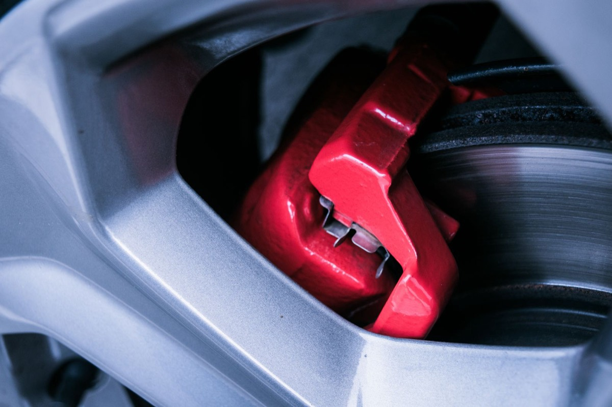
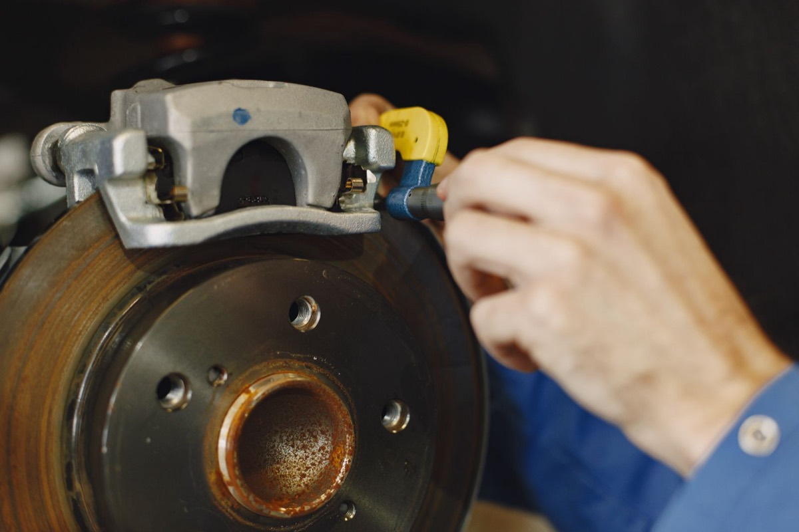
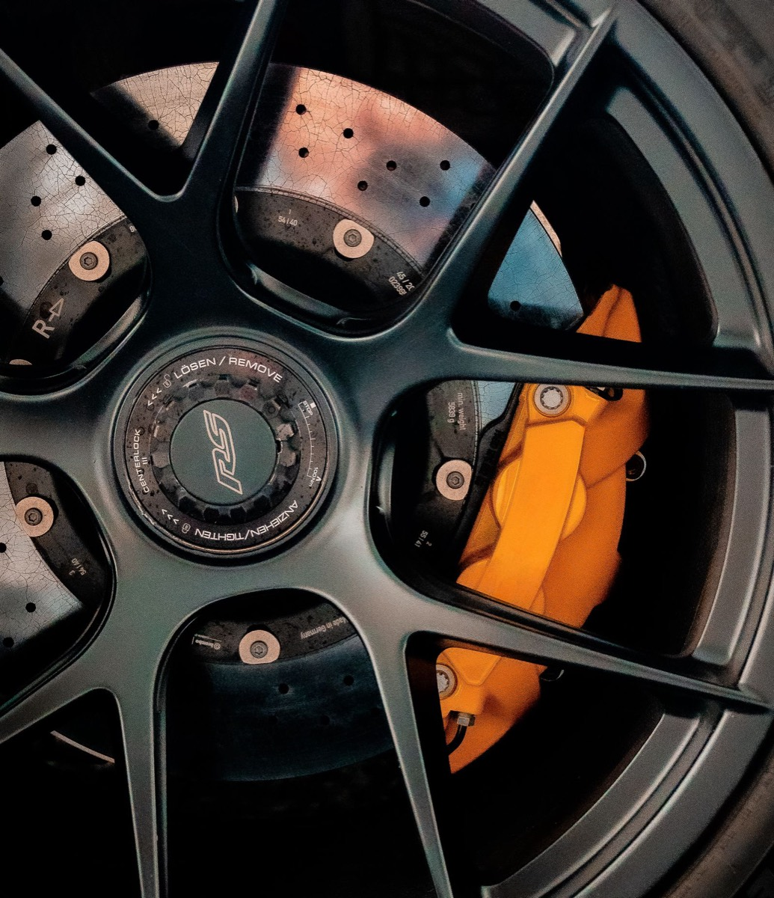
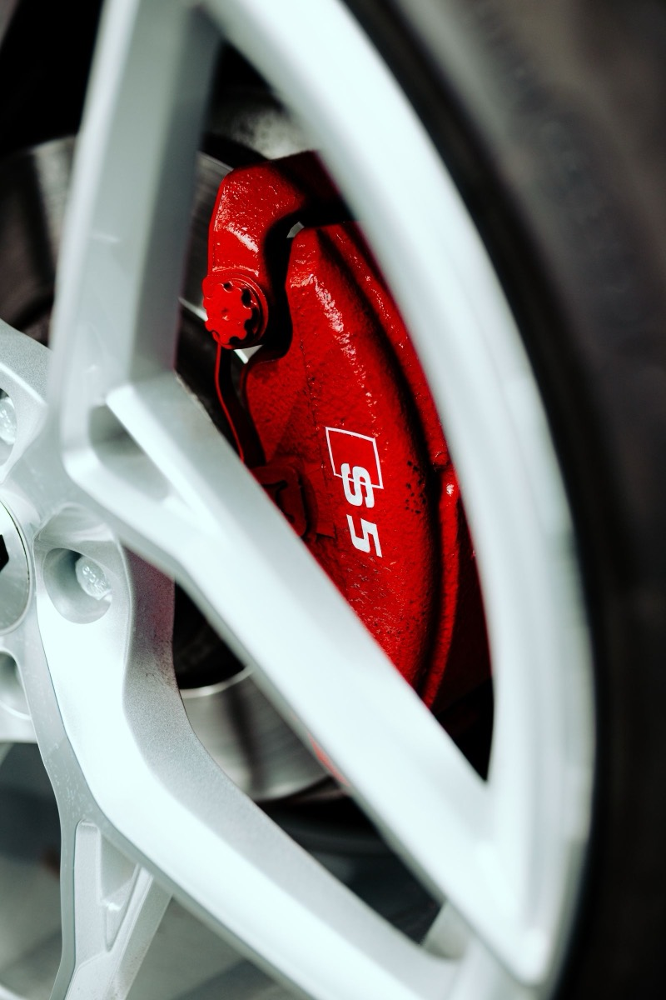

Big Brake Kits: The Wheel Diameter Field Decides Before the Price
Four truck big brake kits sit between $1,010.99 and $3,268.50, and the number that rules out three of them is not the price — it is the minimum wheel diameter printed near the bottom of each spec block. A kit that does not clear your wheels is not a cheaper option or a more expensive one. It is not
Every truck big brake kit publishes a minimum wheel diameter, and that one field often costs more than the kit. The PowerStop kit at $1,010.99 needs 17 in. wheels; the Wilwood TX6R at $3,200.56 needs 20 in. If you are running 18s, the more expensive kit is not a choice you can make without buying wheels too.
A $1,010.99 kit sold as a big brake upgrade carries one piston per caliper — the same count as a base economy car — and lists Remanufactured: Yes. Meanwhile its rear rotor is larger than its front, 14.25 in. against 13.50 in. Both numbers are printed on the listing.

Four truck big brake kits sit between $1,010.99 and $3,268.50, and the number that rules out three of them is not the price — it is the minimum wheel diameter printed near the bottom of each spec block. A kit that does not clear your wheels is not a cheaper option or a more expensive one. It is not an option.
Every figure below was read from the product spec block on 19 November 2026.
Four kits, the fields that decide
| Kit | Price | Rotor diameter | Pistons | Min. wheel | Rear included | Remanufactured |
|---|---|---|---|---|---|---|
| PowerStop KC2073-36 | $1,269.84 | 12.80 in. | 2 per caliper | not published | Yes | Yes |
| Wilwood AERO6 140-9789-D | $2,692.54 | 14.25 in. | 6 per caliper | 18 in. | No | No |
| Wilwood TX6R 140-13877 | $3,200.56 | 16.00 in. | 6 per caliper | 20 in. | No | No |
| Wilwood TX6R 140-13873 | $3,268.50 | 15.00 in. | 6 per caliper | 20 in. | No | No |
Read that table downward and the shape of the market is clear: rotor size climbs from 12.80 in. to 16.00 in., and the wheel requirement climbs with it from “no stated minimum” to 20 inches.
PowerStop KC2073-36, front and rear, Chevy/GMC → $1,269.84 · remanufactured calipers · checked 19 Nov 2026
Wilwood AERO6 140-9789-D, 14.25 in., 18 in. wheels → $2,692.54 · front only · checked 19 Nov 2026
Wilwood TX6R 140-13873, 15.00 in., 20 in. wheels → $3,268.50 · front only · checked 19 Nov 2026
Wilwood TX6R 140-13877, 16.00 in., 20 in. wheels → $3,200.56 · front only · checked 19 Nov 2026

The wheel diameter field is the real filter
This is the field most buyers meet last, and it should be first.
A 20-inch minimum means a 20-inch wheel, not a 20-inch tire. If your truck came with 18s, a kit requiring 20s means buying wheels - and given the prices here, that can be most of the kit’s cost again. The field is doing you a favour by appearing on the listing at all.
Note the pattern in the table: the two most expensive kits both require 20 in. wheels, and the least expensive named one requires 18. On a truck that is already sitting on 20s, the cheapest-to-fit kit is not the cheapest kit.
One listing publishes no minimum at all — the PowerStop kit at $1,269.84. That is not a claim it fits everything. It means the field is blank, and a blank field is something to ask about rather than assume.

“Big brake kit” does not mean many pistons
PowerStop sells these under one big-brake banner at two prices, and the piston count differs between them. Its spec row reads Front Caliper Piston Quantity: One on the Jeep application at $1,010.99 and Two on the Chevy/GMC kit at $1,269.84.
One piston per caliper is a sliding caliper — the same basic arrangement as a base economy car. Two is better. Neither is six.
That matters because piston count is the thing most shoppers believe they are buying when they pay for a big brake kit, and on the cheaper kits they are not buying it. The Wilwood kits here all read Six, forged billet aluminum.
If piston count is what you want, check the row. It is printed.

The rear rotor that is bigger than the front
A fifth part worth reading alongside these is PowerStop’s BBK-JK-002R, the Jeep application at $1,010.99. It publishes both rotor diameters, and they invert what the name suggests:
- Front: 13.50 in.
- Rear: 14.25 in.
The rear disc is larger than the front one on a kit sold as a front-and-rear big brake upgrade. That is unusual enough to be worth stating plainly, and it is on the listing for anyone who looks.
The same part number also carries the one-piston front caliper noted above, so the two most surprising fields on this shelf belong to the same kit.
For comparison, the stock F-150 front rotors documented in our rotor guide run 12.12 in. to 13.78 in. depending on year — so the PowerStop front disc is in roughly stock territory, while the Wilwood 16.00 in. rotor is not close.

Remanufactured: Yes, on a four-figure part
Two of the kits here list Remanufactured: Yes — the PowerStop at $1,269.84 and its Jeep sibling at $1,010.99. Both Wilwood kits list No.
Remanufactured calipers are common and legitimate; they are rebuilt to spec and sold with a warranty. But it is a meaningful difference in what arrives in the box, and at a four-figure price it belongs in the decision rather than in fine print.
The field is in the spec block, a few rows above the price.
Bolt pattern separates the classes before price does
There is a second hard filter in the same spec block, and on a truck it usually settles the question before the wheel diameter does.
- PowerStop KC2073-36:
8 x 6.50 in./8 x 165.10mm - Wilwood AERO6 140-9789-D:
6 x 5.50 in./6 x 139.70mm - Wilwood TX6R 140-13877 and 140-13873:
8 x 6.50 in./8 x 165.10mm
Six-lug and eight-lug are not interchangeable, and they map onto vehicle classes rather than preferences. The AERO6 is the only six-lug kit here; the other three are all eight-lug 6.50 in.
If your truck is eight-lug, the $2,692.54 AERO6 is not on your list at any price, and the field that removes it sits above the rotor diameter. If it is six-lug, the reverse is true, and the three cheaper-to-fit eight-lug options are all unavailable to you.
This is why the spec block is worth reading in order rather than shopping by price: two hard filters can eliminate a kit before you have considered anything you might have an opinion about.
What the expensive kits actually include
Reading down the “Rear Rotor Included” column explains much of the price gap:
- PowerStop: Rear Rotor Included: Yes. A complete front-and-rear set.
- All three Wilwood kits: Rear Rotor Included: No.
The Wilwood kits are front only. So the $3,200.56 and $3,268.50 figures buy one axle, and the $1,269.84 PowerStop figure buys two. Compared per axle, the gap between them is far wider than the sticker prices suggest.
The two TX6R kits also differ from each other by $68 for a 15.00 in. rotor against a 16.00 in. one, both six-piston, both 20-inch minimum. If you are already committed to 20-inch wheels, that is a small premium for an inch of diameter; if you are not, both are out.
What the hardware does not include
Three fields read the same across every kit in the table:
- Master Cylinder Included: No
- Brake Booster Included: No
- Front Spindles Included: No
The Wilwood kits are described as volume-matched to work with the OE power brake system, which is the manufacturer’s claim about compatibility rather than a statement that nothing else needs attention. Braided stainless flex lines are noted as a separate purchase for some applications.
The AERO6 kit carries an additional note worth reading twice: it will not fit vehicles with aluminum spindles, only cast iron. On a truck where spindle material varies by year and trim, that is a fitment question to settle before ordering, not after.
Does a big brake kit need a CARB Executive Order?
No. Brakes are not emissions equipment. There is no CARB EO number to look for on a caliper, rotor or brake line, and no part in this article affects a California smog inspection.
That is worth stating because the question comes up whenever a California buyer sees a four-figure truck part. The answer here is simply that the emissions rules do not reach it.
What I could not verify
- Stopping distance improvement for any of these kits. No listing here publishes a measured 60-0 or 70-0 figure, before or after. The case for a kit is heat capacity and fade resistance, and this article makes no shorter-stop claim.
- Whether the PowerStop kits fit a specific truck. I read spec blocks, not application tables. With no published minimum wheel diameter on the Chevy/GMC kit, fitment is a question for the seller by part number.
- What the Wilwood kits weigh against stock hardware, which is the other half of the unsprung-mass question.
- Rotor thickness at discard for these kits, so the resurfacing arithmetic in our rotor guide could be applied to them.
- Whether the 16.00 in. rotor clears a specific 20-inch wheel. Minimum wheel diameter is a diameter, not a spoke profile, and caliper clearance varies by wheel design.
Topics
- Brakes
- PowerStop
- F-150